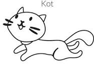
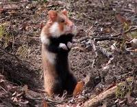

<!DOCTYPE html>
<html lang="pl"></html>
<head>
    <meta name="keywords" content="tygrys,kot,lef,lew,lefkot,lewkot,tygrkot, LUBIE JEŚĆ PLACKI ZIEMNIACZANE MAMY BO SOM DOBŁE"/>
    <meta name="description" content="to jest strona o kotkach"/>
    <meta charset='utf-8'>
    <meta http-equiv='X-UA-Compatible' content='IE=edge'>
    <title>My first page</title>
    <meta name='viewport' content='width=device-width, initial-scale=1'>
    <link rel='stylesheet' type='text/css' media='screen' href='main.css'>
    <script src='main.js'></script>
</head>
<body>
    <h1>to jest profesjonalna strona internetowa która nigdy nie zostanie opublikowana ponieważ TAK</h1>
    <a href="https://pl.wikipedia.org/wiki/Kot_domowy" target="_blank" title="kotki erłopejskie wfdjnavskhgfjyhbvrse">
        
    </a>
    <h1>najlepsze kotki erłopejskie:</h1>
    kot filemon <br /> kot bonifacy <br /> krecik <br /> <br /> 
    <a href="https://pl.wikipedia.org/wiki/Chomik_europejski" target="_blank" title="homiki erłopejskie wfdjnavskhgfjyhbvrse">
        
    </a>
    <h1>najlepsze chomiki erłopejskie:</h1>
    homik <br /> puszek <br /> jerry <br /> <br /> 


    
</body>
</html>